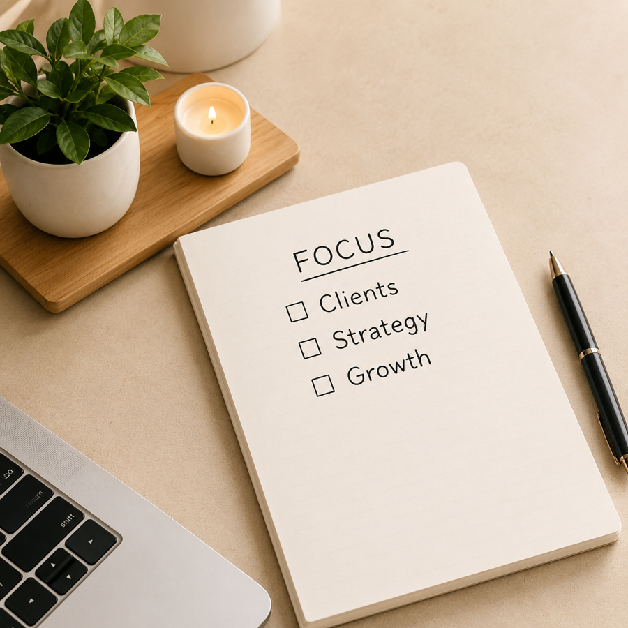

Your day feels
more manageable
Your inbox, calendar, and admin are organized so you are not constantly reacting.
Inbox to Ops Co. helps service-based business owners manage the inbox, calendar, client coordination, admin, workflows, and day-to-day details that keep the business running.
Your inbox, calendar, and admin are organized so you are not constantly reacting.
Messages, next steps, scheduling, and details are tracked so fewer things slip.
Projects, workflows, SOPs, and day-to-day operations become easier to see and manage.
You can spend more time serving clients, making decisions, and growing the business.

You didn't start your business to spend your best hours sorting emails, rebuilding your calendar, chasing down details, or trying to remember what still needs to be done.
You are capable. The problem is that too much of the business still lives in your head.
Built for service-based founders and small teams that need steady, capable support.
Inbox to Ops Co. is a good fit for established solo founders, small service-based business owners, nonprofit leaders, and executive teams that need help managing the details that keep work moving.
You may not need a full-time hire yet. You may not need a traditional agency. You need someone who can step in, learn how your business works, and take ownership of the day-to-day support that keeps everything on track.
Coaches, consultants,
and service providers
Small business owners
with steady clients and
recurring admin needs
Nonprofit leaders
and small executive
teams
Founders preparing to
clean up systems before
growth
Business owners who
need more than task
help, but not a full-time
operations hire
Reliable executive support for the inbox, calendar, admin, and daily details that need consistent attention.
Ongoing operations support for founders who need someone to manage the moving pieces, follow up, organize workflows, and keep work on track.
Focused project support for businesses that need better systems, cleaner workflows, or help organizing the back end without a monthly retainer.
More than task support. Less than a full-time hire.
Inbox to Ops Co. sits in the space between traditional admin help and a full-time operations role. You get reliable executive support, practical business management, and a partner who can help keep the day-to-day moving without adding another employee to payroll.
Help with the recurring details that keep your business running.
Support from someone who notices what is messy, missing, or harder than it needs to be.
Flexible support that can start with admin and expand into workflows, systems, and ongoing operations.
Backed by nearly a decade of executive and operational support experience at Capital One.
I'm Dana-Ann Brown, founder of Inbox to Ops Co. I bring nearly a decade of executive and operational support experience at Capital One, along with 20+ years of real-world business experience.
My work is built around calm, clarity, and follow-through. I help business owners get the details out of their head, organize what needs to happen, and create a smoother way to manage the day-to-day.
I don't just check items off a list.
I look for the gaps, patterns, and small fixes that make your business easier to run.
More About Dana-Ann →We start with a free call to talk about your business and what support would help most.
We define the priorities and agree on the best level of support for where you are now.
I step in, get organized, and start handling the details so you can focus on what matters.
We communicate, adjust, and keep your business running smoothly together.